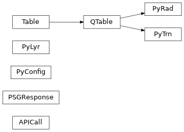

The libpypsg API#
libpypsg Package#
Classes#
|
A class to call the PSG API. |
|
A class to parse the response from the PSG API. |
|
A configuration in the form of a python object. |
|
Python representation of lyr files. |
|
Python representation of rad files. |
|
A python representation for .trn files. |
Class Inheritance Diagram#

The main submodules are: